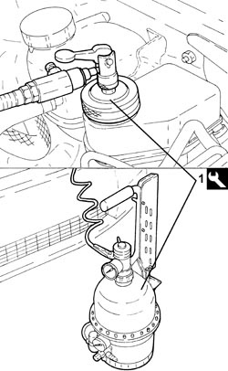
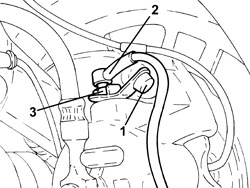

0010T65 HYDRAULIC BRAKE SYSTEM - BLEED AIR
- Path
- Procedures > 00 MAINTENANCE > 0010 NEW VEHICLES AND MAINTENANCE > 0010T VEHICLE FLUIDS > 0010T65 HYDRAULIC BRAKE SYSTEM - BLEED AIR
- Kind
- repair procedure (removal / refitting; the operation number is the code)
- Applies to
- all engines; all production periods
- Interactive page
- https://sloeber94.github.io/elrnDB-fCrm/en/#/194000217
Applies to: all engines; all production periods
- Position the vehicle on a lift.
- Check that the brake/clutch fluid is between the MIN and MAX levels.
1. Remove the brake/clutch fluid reservoir cap and connect the equipment to the reservoir.
Tool | Description | Function | Validity |
|---|---|---|---|
1806524000 | Brake-clutch bleeding equipment | Brake-clutch hydraulic systems bleeding |

Applies to: all engines; all production periods
1. Remove the protective cap for the bleed valve on the brake caliper.
2. Connect the recovery device (pipe and reservoir) to the brake caliper bleed valve.
3. Open the bleed valve.
- Open the fluid reservoir tap slowly.
- Wait for all the air in the hydraulic system to escape.
- Retighten the bleed valve on the brake caliper to the specified torque.
Component | Fastening | dia | Value (daNm) | Validity |
|---|---|---|---|---|
Front/rear brake calipers bleed screw | - | M10 | (brake caliper side) 0.8 - 1.2 |

Applies to: all engines; all production periods
- Repeat the operations described above for the remaining brake calipers.
- Remove the vehicle from the lift.
Topics that link to this page (26)
- F001 POOR BRAKING ACTION
- F002 REAR WHEELS LOCK WHILST BRAKING
- F010 EXCESSIVE BRAKE PEDAL FREE PLAY
- F011 BRAKE PEDAL TOO SOFT
- 3310A30 FRONT BRAKE CALIPER (ONE) - R.R
- 3310A57 FRONT BRAKE CALIPER BRACKET (ONE), LEFT OR RIGHT - R.R
- 3310B36 REAR BRAKE CALIPER (ONE), LEFT OR RIGHT - R.R
- 3330C10 MASTER CYLINDER (PUMP) - R + R
- 3330C12 MASTER CYLINDER (PUMP) - R.R. FOR RIGHT HAND DRIVE VERSIONS
- 3330C30 BRAKE FLUID RESERVOIR - R + R AND WASH INSIDE
- 3330C34 BRAKE FLUID RESERVOIR - R + R AND WASH INSIDE - VERSIONS WITH RIGHT HAND DRIVE AND ABS
- 3330C44 BRAKE FLUID MINIMUM W/L SWITCH - R + R
- 3330D02 BRAKE SERVO/BRAKE PUMP ASSEMBLY - R.R.
- 3330D03 SERVO BRAKE / BRAKE PUMP ASSEMBLY - R.R. FOR RIGHT DRIVE VERSIONS
- 3340A12 ABS HYDRAULIC AND ELECTRONIC CONTROL UNIT - R.R.
- 3340A20 ABS ELECTRONIC CONTROL UNIT - R+R
- 3340B10 HOSE TO L/H OR R/H FRONT BRAKES (ONE) - R+R
- 3340B30 HOSE TO L/H OR R/H REAR BRAKES (ONE) - R+R
- 3340B52 RIGID PIPE (ONE) FROM MASTER CYLINDER (PUMP) TO A.B.S HYDRAULIC CONTROL UNIT - R.R.
- 3340B53 RIGID PIPE (ONE) FROM MASTER CYLINDER (PUMP) TO ABS HYDRAULIC CONTROL UNIT - R.R. FOR RIGHT HAND DRIVE VERSIONS
- 3340B55 RIGID PIPE FROM HYDRAULIC CONTROL UNIT TO LEFT FRONT BRAKE - R.R.
- 3340B56 RIGID PIPE FROM HYDRAULIC CONTROL UNIT TO RIGHT FRONT BRAKE - R.R.
- 3340B62 RIGID PIPE (ONE), LEFT OR RIGHT, FROM HYDRAULIC CONTROL UNIT WITH PIPE CONNECTOR TO REAR BRAKES - R.R.
- 3340B67 RIGID PIPE FROM RIGHT REAR BRAKE CONNECTOR - R.R.
- 3340B69 RIGID PIPE FROM LEFT RER BRAKE CONNECTOR - R.R.
- 3340B71 INTERMEDIATE RIGID PIPING FITTING, LH REAR BRAKE - R R